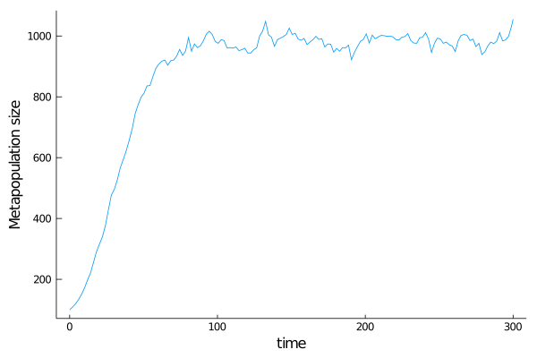

A first model of meta population
In this script, we model the evolution of a population where agents are simply defined by their position on some landscape. We implement the simplest possible birth and death function.
The landscape
Let's start by a linear landscape. We define a discrete segment of length 9, with reflecting boundary conditions. In fact, reflecting boundary conditions are implemented for any finite space.
As of v1, only reflections on one dimensional space are implemented. We have a two dimensional reflection method that will be released in the future.
There are two ways of implementing a linear landscape. The first one uses a DiscreteSegment while the second relies on LightGraphs.jl library. Both are almost equivalent.
DiscreteSegment
using ABMEv
nodes = 10
mysegment = DiscreteSegment(1,nodes)
wholespace = (mysegment,)grid
using ABMEv, LightGraphs
nodes = 10
g = grid([nodes,1])
mysegmentgraph = GraphSpace(g)
wholespace = (mysegmentgraph,)Notice that the whole space should be a tuple of spaces. Even where there is only one sub vector space as here, you need to have brackets and comma around the unit vector space.
Here is how you can visualise the landscape.
using GraphPlot
gplot(g, collect(1:nodes), collect(1:nodes))
Defining competition processes
We propose that any individual have a constant birth rate, and competes with all the individuals present in the same patch. Assume there are $N_t$ individuals at time $t$. Let $i \in \{ 1,2,\dots,N_t\}$. $x_{i} \in \{1,2,\dots,9\}$ denotes the position of the $i$-th individual. The competition pressure experienced by individual $i$ is such that
where $\delta$ is the dirac function.
In this way, we recover a logistic growth function for subpopulation within a patch.
K0 = 1000 # We will have in total 1000 individuals
b(X,t) = 1 / nodes
d(X,Y,t) = (X[1] ≈ Y[1]) / K0At equilibrium, population size in each deme will reach K0 / nodes.
Even though time is not used, you have to write birth and death functions with time dependency.
Dispersal
We assume that anytime an offspring is born, it is given a chance to move (\mu = 1).
mu = [1.]
D = (1.5,)Running the world
We initialise the world with initial population of size $K_0 / 9$ located on patch 5. NMax corresponds to the maximum number of individuals that can be attained. If attained, then the programm stops. We keep track of individuals' ancestors by setting ancestors=true. Because we wish to use Gillepsie algorithm, we need rates=true as agents' internal birth and death rates are updated at every time step.
rates treatment is something we might implement in the library internals.
using UnPack# useful macro @pack!
NMax = 2000
tend = 300.
p = Dict{String,Any}();@pack! p = D,mu,NMax
myagents = [Agent(myspace,(5,),ancestors=true,rates=true) for i in 1:K0/nodes]
w0 = World(myagents,myspace,p,0.)
@time sim = run!(w0,Gillepsie(), b, d, tend)This is the simplest run you can do. Now is time for more interesting things
Analysis
Size of the world
Let's verify that the population's growth is logistic. We will plot the population size over time. To do so, one need to define dt_saving < tend to save every dt_saving time steps of the world.
wsize = [length(w) for w in sim[:]]
using Plots
Plots.plot(get_tspan(sim),wsize,
label = "",
ylabel = "Metapopulation size",
xlabel ="time",
grid = false)
Note that one could also use a callback function to obtain time series of size of the world computed at simulation time. See Callbacks page.
Position through time
One might be tempted to plot the agents position for some time steps.
Plots.plot(sim,
label = "",
ylabel = "Geographical position",
grid = false,
markersize = 10)